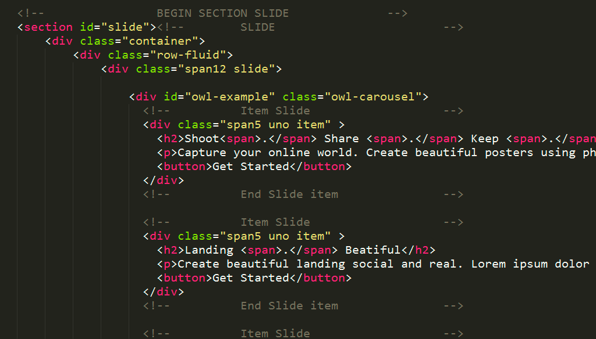
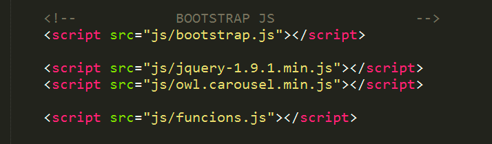

Thank you for purchasing my theme. If you have any questions that are beyond the scope of this help file, please feel free to email via my user page contact form here. Thanks so much! this is my e-mail: mager19@gmail.com
This theme has a responsive design with variation of column layouts depending on the page. This theme uses Twitter bootstrap v3.3.7, which will help streamline any customization you want to perform. If you are unfamiliar with bootstrap, be sure to read about it here.
The main structure of this site is wrapped in a "container" div, followed by a "row" div. These div Within each section is given a site's home grid size equaling all 12 columns long.
If you would like to edit the color, font, or style of any elements in one of these columns, you would search the classes´ names or id´s names and go to css, search the name selected and make the changes that you want :
I'm using a master file of CSS (style.css) in this issue that you are free to change depending on the customization you want. There are also four additional stylesheets that change is not recommended. Style sheets lies in the 'CSS' folder and their subfolders. The order of these files is:
If you would like to edit a specific section of the site, simply find the appropriate label in the CSS file, and then scroll down until you find the appropriate style that needs to be edited.

File funcions.js found in the js folder contains the functions necessary for the proper functioning of the slides used in the subject
You can view this template in any web browser from your desktop computer. Because the files are written in HTML, you do not need an internet connection in order to display or edit the template.
Once you have downloaded the files from ThemeForest, open the html folder. find 3 folders in this well (css, img and js) and 1 html file (index.html).
I've used the following images, icons or other files as listed.
all images are take of pexels.com, and your licence es creative commons
Once again, thank you so much for purchasing this theme. As I said at the beginning, I'd be glad to help you if you have any questions relating to this theme. No guarantees, but I'll do my best to assist. If you have a more general question relating to the themes on ThemeForest, you might consider visiting the forums and asking your question in the "Item Discussion" section.
Mario Germán Reyes - @mager19